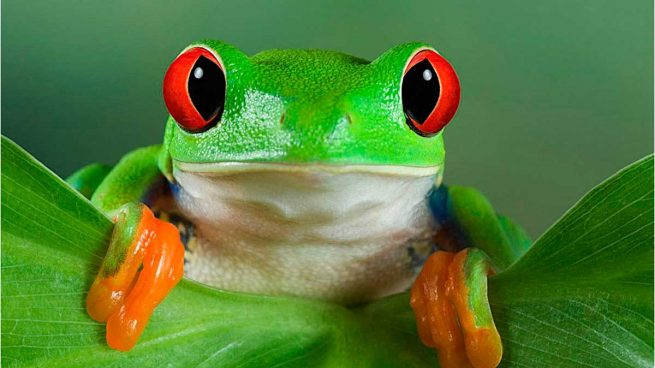

Tortuga
Las tortugas son un tipo de reptiles caracterizados por el sólido caparazón que protege sus órganos vitales del que emergen la cabeza, las patas y la cola. Son animales ovíparos que cavan sus nidos en la tierra, donde llevan a cabo la incubación de los huevos. A pesar de que carecen de dientes, cuentan con un fuerte pico que usan para alimentarse.


Rana verde de ojos rojos
La Rana verde de ojos rojos pertenece a una de esas especies arborícola tan curiosas como peculiares. Un anfibio con orígenes mexicanos y colombianos que pueden llegar a alcanzar los 7 centímetros de altura. Cabe destacar que este tipo de ranas mascota tienen una piel levemente tóxica, por eso se recomienda no manipularlas mucho con las manos. Los dueños de este tipo de ranas deben incorporar a sus terrarios un sustrato húmedo de fibra de coco, unas piedras planas y un tronco inclinado para que el animal se encuentre en plena comodidad.

Serpiente de maiz
Es muy dócil y fácil de entrenar. Posee cerca de 1 metro de largo y su cuerpo tiene tonalidades de naranja y amarillo con un perfilado de color negro. Se alimentan básicamente de grillos, roedores, lagartijas y gusanos.